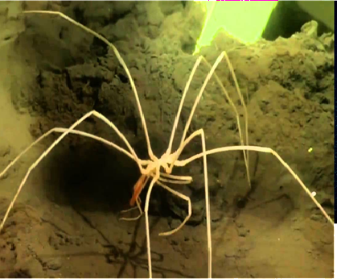

СЕМЕЙСТВА относятся к Colossendeidae
ГЛУБИНА: 2 000 до 4 000 метров и глубже
КОГДА ОТКРЫЛИ: известны науке давно, но их глубоководные и полярные крупные формы активно изучаются исследователями.
ТИП ПИТАНИЯ: хищники или собиратели-падальщики, питающиеся малоподвижными мягкотелыми беспозвоночными
ведут медленный образ жизни, питаясь мягкотелыми беспозвоночными. Они используют хоботок для высасывания пищи, способны зарываться в грунт для дыхания или поиска пищи, а их гигантские размеры (до 50+ см) делают их практически неуязвимыми на дне. Они безвредны для людей.
используют хоботок, напоминающий соломинку, для питания гидроидами, морскими анемонами, медузами и мелкими беспозвоночными.
отличаются очень медленным движением по морскому дну.
Уникальное поведение включает закапывание крошечного тела в грунт, при этом конечности остаются снаружи, вероятно, для дыхания или поиска пищи. Среда обитания: встречаются по всему миру, от мелководья до глубоких вод, часто в полярных регионах.
Размножение: самцы вынашивают яйца на специальных ногах.
Маскировка: Молодые особи могут украшать свой панцирь водорослями.

наверх